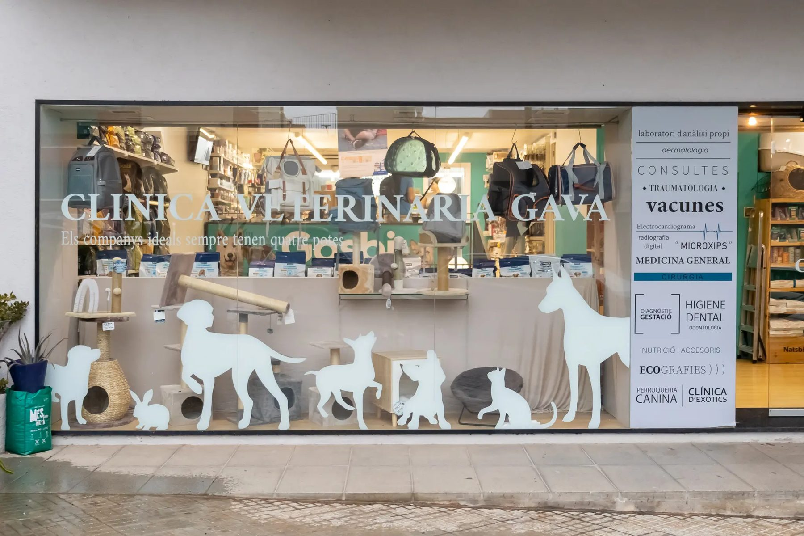
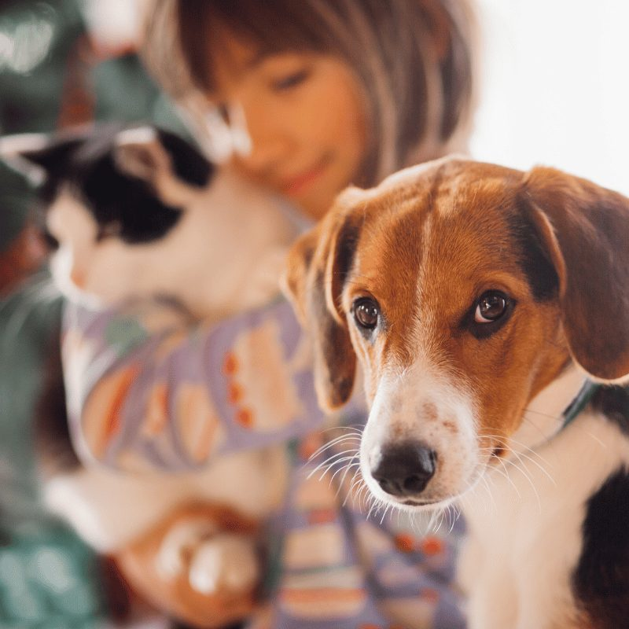

Contáctanos
Estamos aquí para ayudarte. Rellena el formulario, escríbenos o llámanos: te responderemos lo antes posible.
Formulario de contacto
Rellena el siguiente formulario
Visítanos
C/ Begues nº 6, Gavà
Escríbenos un mensaje
Llámanos
Horario
Lunes a viernes, 9:00–20:00

Resolvemos tus dudas
Preguntas Frecuentes
En nuestra clínica encontrarás atención médica para mascotas, vacunaciones, desparasitaciones, revisiones rutinarias, cirugías, servicios de diagnóstico (rayos X y análisis), asesoramiento nutricional y mucho más.
Estamos abiertos de lunes a viernes de 9:00 a 20:00.
Recomendamos pedir cita para consultas regulares o tratamientos específicos. Llámanos al 936 62 59 51.
Sí, contamos con una tienda especializada donde encontrarás alimentos de alta calidad, accesorios y productos recomendados por veterinarios para cuidar a tu mascota.
Aunque nuestros pacientes más comunes son perros y gatos, también ofrecemos servicios para pequeños animales como conejos, hurones, aves y algunos animales exóticos. Contáctanos para consultar sobre tu caso específico.